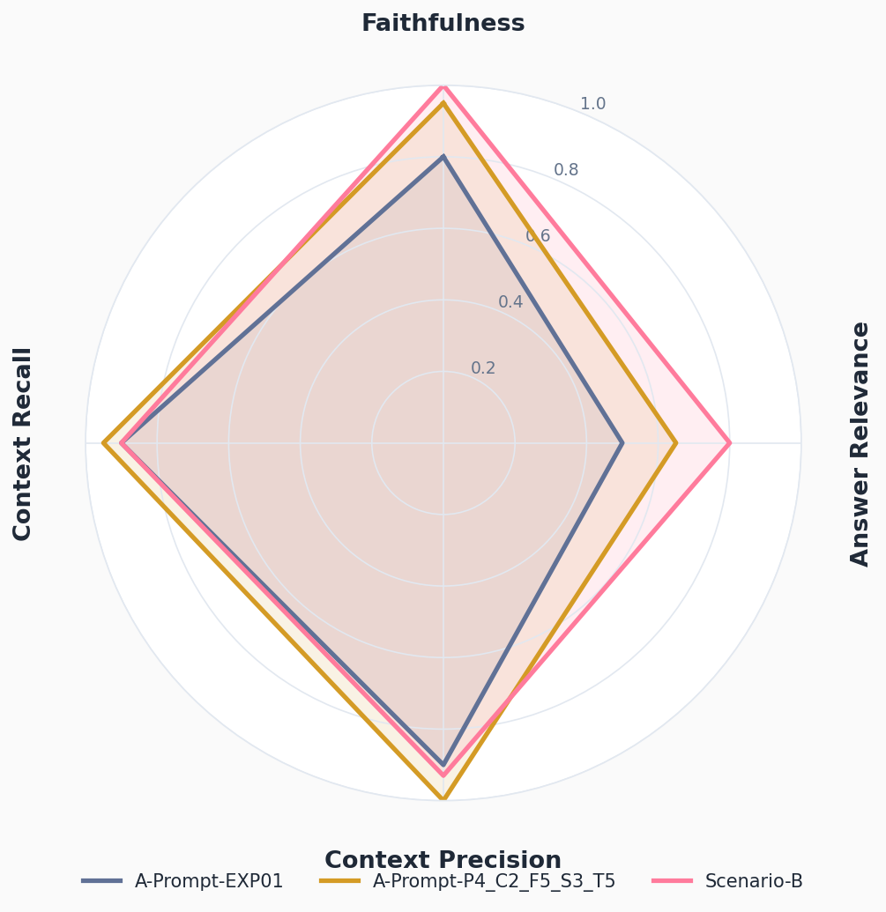
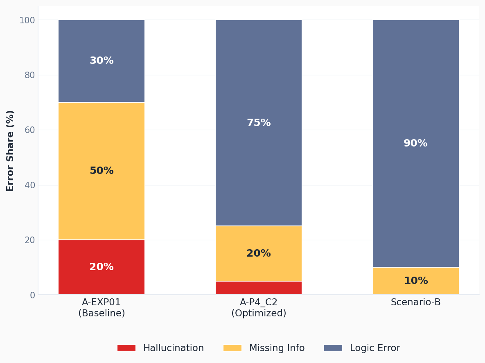

생성 품질 분석 · 섹션 ⑤ · 5지표 상세 + 에러 진화
30/32
생성 품질 5지표 상세 + 에러 진화
4지표 균형도 + 에러 유형 분포 — Groundedness 0.94 · Completeness 0.85 · Citation 0.98 등 5지표 상세 보완
4지표 균형도 Faithfulness · AR · CP · CR

에러 유형 분포 변화 환각 → 누락 → 논리 오류로 이동

핵심 인사이트환각은 사라지고 논리 오류가 다음 과제로 이동
Hallucination 20% → 0% · 프롬프트·검색 단계는 충분히 해결됨, 이후 병목은 LLM 추론 능력 (PEFT 파인튜닝 근거)
팀원 분석 노트북 · A-EXP01 baseline / A-P4_C2 최적화 / Scenario-B · 5지표: Faithfulness · Answer Relevance · Context Precision · Context Recall · (Groundedness / Completeness / Citation 추가)